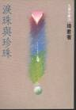
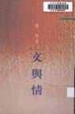
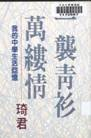
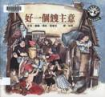

著作目錄
| 書名 | 封面 | 內容 | 出版時間 | 出版社 | 開本/ 頁數 |
|---|---|---|---|---|---|
| 《比伯的手風琴》 |  |
兒童翻譯小說 | 1989年 | 漢藝色研出版社 | 165頁 |
| 《李波的心聲》 |  |
兒童翻譯小說 | 1989年 | 漢藝色研出版社 | 173頁 |
| 《淚珠與珍珠》 |  | 散文集 | 1989年10月 | 九歌出版社 | 32開 / 230頁 |
| 《文與情》 |  | 散文小說合集 | 1990年8月 | 三民書局 | 新25開 / 188頁 |
| 《母心‧佛心》 |  |
散文集 | 1990年10月 | 九歌出版社 初版 | 32開 / 237頁 |
| 2004年12月 | 九歌出版社 二版 | 25開 / 222頁 | |||
| 《一襲青衫萬縷情》 |  | 散文集 | 1991年7月 | 爾雅出版社 | 32開 / 235頁 |
| 《橘子紅了》 |  |
小說集 | 1991年9月 | 洪範書店 | 32開 / 194頁 |
| 《愛吃糖的菲利》 |  |
兒童翻譯小說 | 1992年2月 | 九歌出版社 原著 >約翰‧保利斯 | 21x15cm / 139頁 |
| 《好一個餿主意》 |  | 兒童翻譯小說 | 1992年3月 | 遠流出版社 改寫、繪圖 >格‧塞蒙克 | 16頁 |